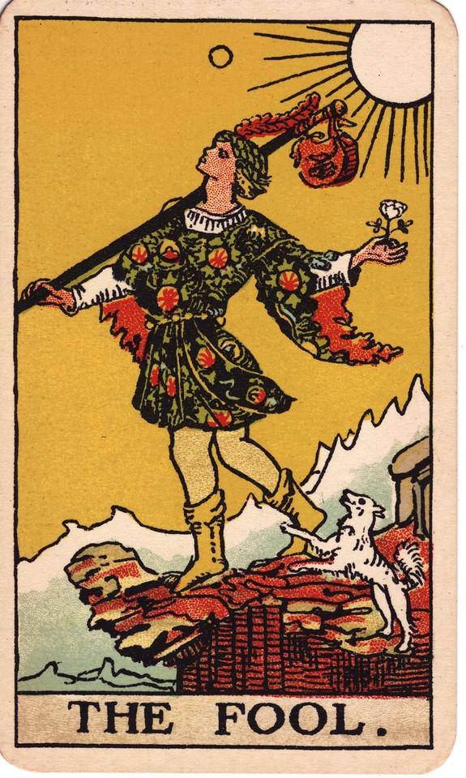
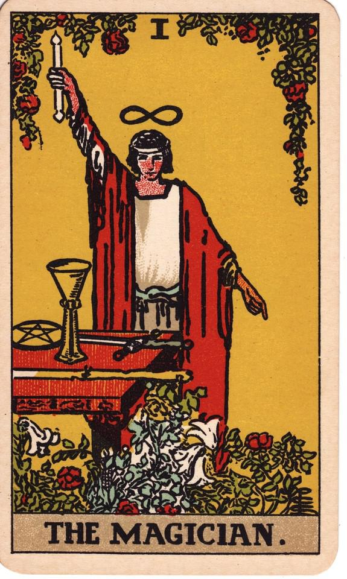
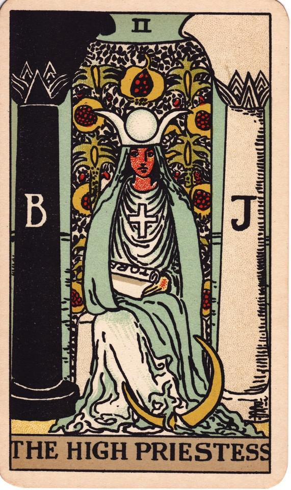

Oráculo do
Tarot
Por: Ana Gemini
Conheça o Tarot

0 - O Louco
Palavras-chave: Novos começos, aventura, espontaneidade, intuição, liberdade, crescimento pessoal, inocência, riscos, oportunidades.

I - O Mago
Palavras-chave: Criação, poder, manifestação, habilidade, iniciativa, confiança, foco, mente, realização.

II - A Sacerdotisa
Palavras-chave: Intuição, Sabedoria, Mistério, Espiritualidade, Conexão, Intuito, Profundidade, Paz, Iluminação.